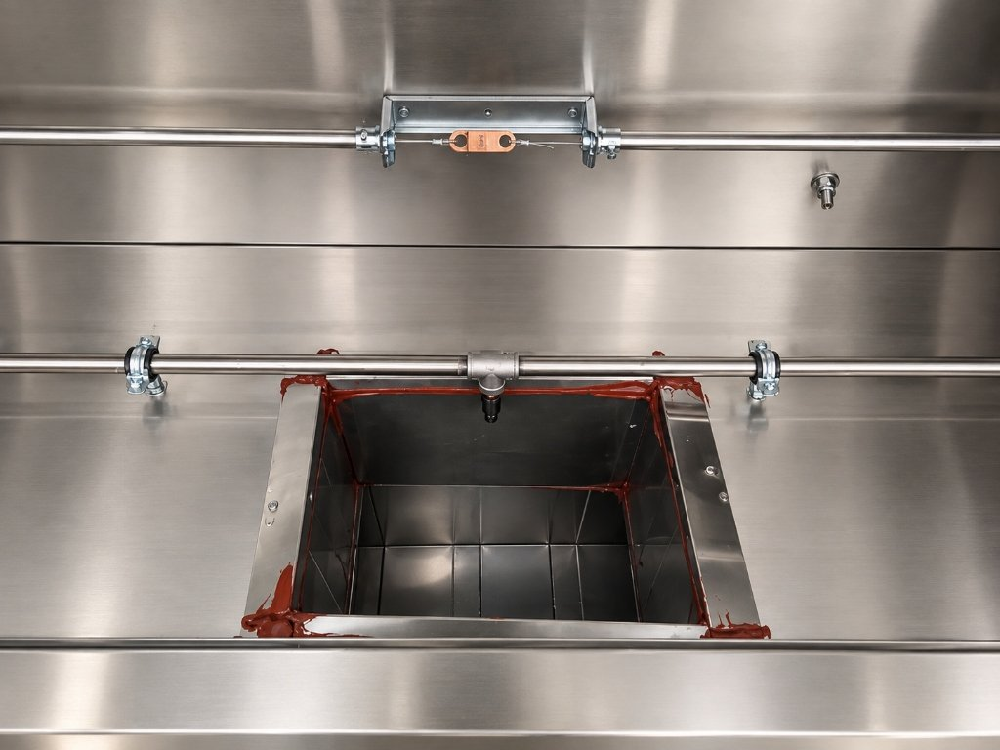
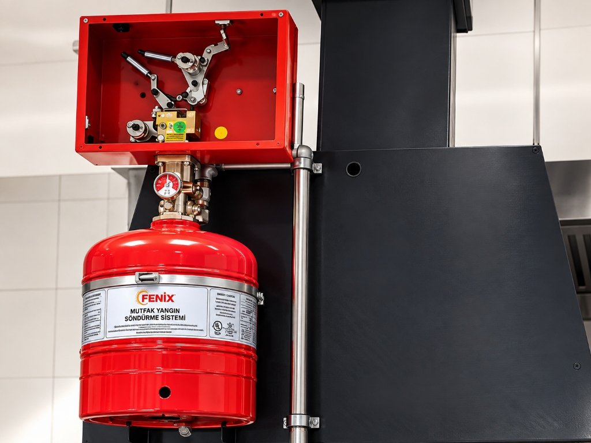
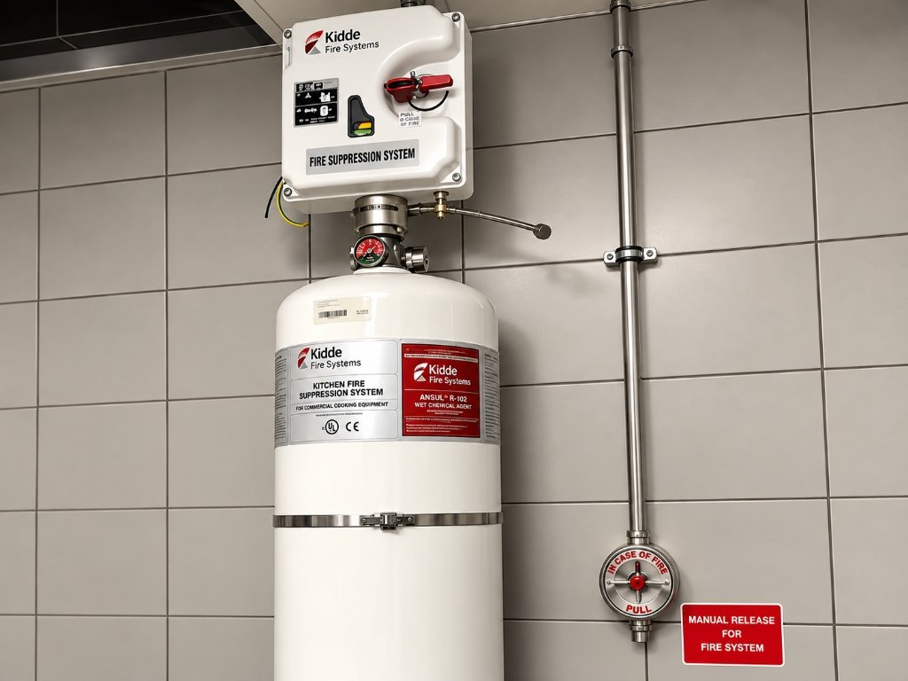
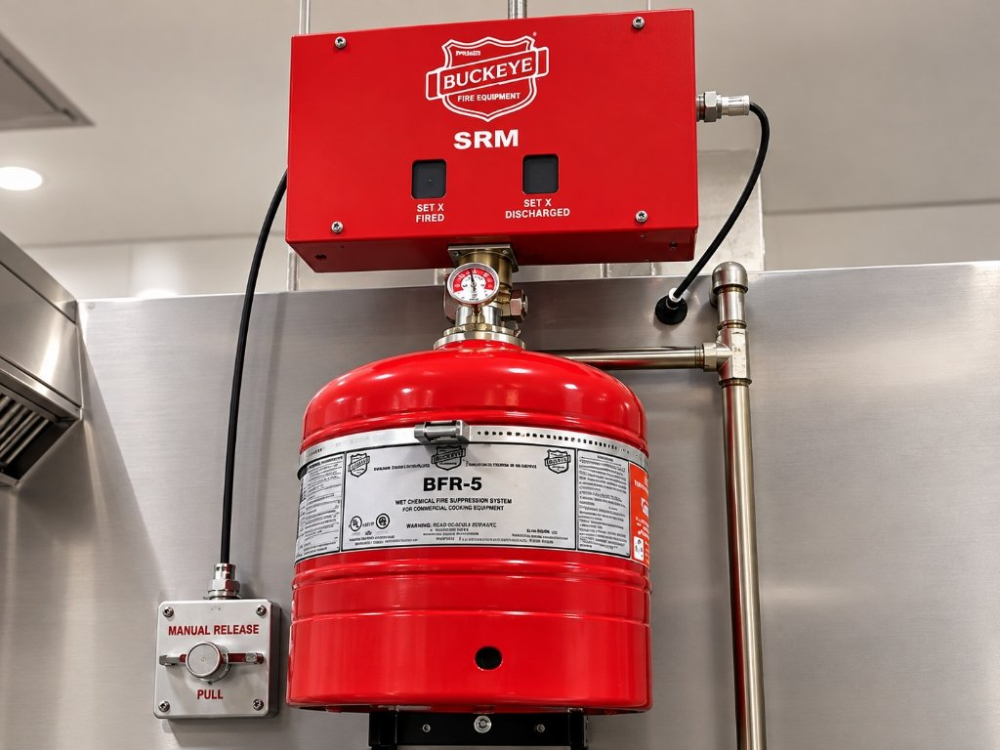
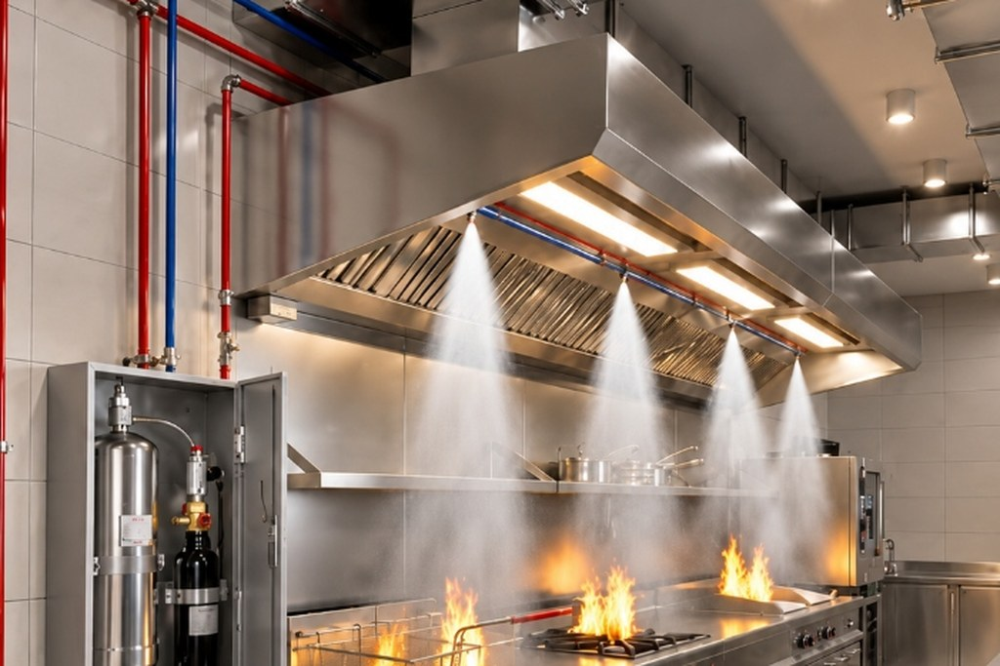
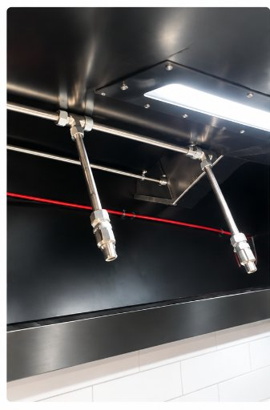
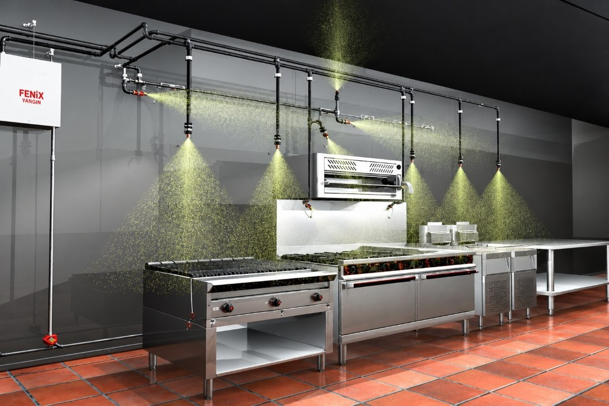
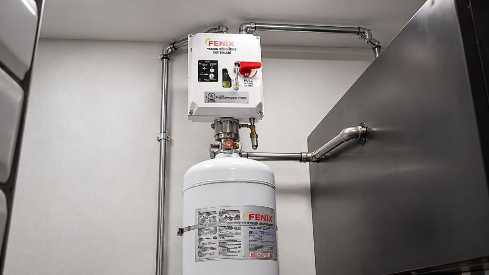

Davlumbaz
Yangın Söndürme Sistemleri
Endüstriyel mutfaklarda pişirme grupları, davlumbaz filtreleri ve baca kanalları için otomatik yangın söndürme çözümleri.
Ocak, ızgara ve fritöz gibi yoğun yağ ve alev riski taşıyan ticari mutfaklarda yangını başlangıç anında söndüren, duman ve ısı yayılımını önleyen otomatik söndürme sistemleri.

Davlumbaz Yangın Söndürme Sistemi Nedir?
Davlumbaz yangın söndürme sistemleri; modern ticari ve endüstriyel mutfaklarda pişirme gruplarını, davlumbaz içi filtreleri ve baca kanallarını yangın tehlikesine karşı korumak için geliştirilmiş otomatik söndürme çözümleridir.
Mutfaklar, gün boyu yoğun üretimin gerçekleştiği, yüksek ısı ve yanıcı yağların sürekli kullanıldığı kritik mekanlardır. Pişirme cihazlarında başlayan alevlerin henüz başlangıç noktasında kontrol altına alınması; can kayıplarının, ciddi maddi hasarların ve yangının havalandırma bacaları aracılığıyla tüm binaya sıçramasının önüne geçer.
Sistem; yangın anında panik faktörüne bağlı kalmaksızın otomatik devreye girerek mutfak çalışanlarının, misafirlerin ve yüksek değerli mutfak donanımlarının güvenliğini sağlar.

Mutfak Davlumbaz Söndürme Sistemi Nasıl Çalışır?
Davlumbaz söndürme sistemleri, sıvı kimyasal söndürücü vanası ile gergi teli üzerinde belirli bir sıcaklığa ulaşıldığında kopan eriyen lehimli algılayıcılar sonucunda otomatik olarak aktif olur. Aynı zamanda acil durumlarda personelin manuel olarak sistemi boşaltmasını sağlayan çekme butonu tesisatı bulunur.
Davlumbaz Yangın Söndürme Sistemlerinde Kapasite ve Akış Seçenekleri
Islak kimyasal davlumbaz söndürme sistemlerinde silindir kapasiteleri ve akış (flow) sayıları; mutfaktaki pişirme cihazlarının boyutuna, davlumbaz uzunluğuna ve baca kesit ölçülerine göre belirlenir. Uluslararası test referansı olan UL 300 standart kriterleri ve üretici tasarım kılavuzları çerçevesinde projelendirilen tipik kapasite seçenekleri şunlardır:
1 – 5 Akış: Kompakt mutfaklar ve küçük pişirme hatları için tekli silindir konfigürasyonu.
5 – 7 Akış: Orta ölçekli restoran mutfakları ve standart davlumbaz filtre hatları için sistem kapasitesi.
7 – 10 Akış: Fritöz ve ızgara gruplarının yoğun olduğu profesyonel pişirme hatları.
10 – 12 Akış: Geniş mutfak davlumbazları, otel ve hastane ana pişirme alanları.
12 – 15 Akış: Yüksek kapasiteli catering tesisleri ve çoklu pişirme adaları koruması.
Not: Belirtilen akış ve kapasite değerleri donanım üreticilerine göre farklılık gösterebilir. Mutfak mimarisine göre nozul sayısı ve silindir hacmi proje keşfi sırasında hidrolik hesapla netleştirilir.
Otomatik Davlumbaz Yangın Söndürme Sistemleri
Otomatik davlumbaz içi söndürme sistemleri, küçük çaplı alevlenmelerin daha ciddi yangınlara dönüşmesini engellemek amacıyla kurulur. Dumanın ve yağ buharının yoğun olduğu davlumbaz, baca ve mutfak arasında koruyucu bir güvenlik hattı oluşturur.
Otomatik Sistemlerin Özellikleri
Sistem çerçevesinde kullanılan kaliteli algılama mekanizması sayesinde harlama durumunun önüne geçilir ve saniyeler içinde söndürme süreci başlar. Pişen gıdalardan çıkan dumanlar ile tutuşan alev dumanı ayırt edilerek yanlış tetiklemelerin önlenmesi hedeflenir.
Sistem Tasarımı ve Projelendirme
Etkin bir söndürme için titiz mühendislik hesaplamaları neticesinde ihtiyaç duyulan söndürücü tüp sayısı, devre elemanlarının yerleştirilme biçimi ve söndürme ajanının seçimi belirlenir. Yetersiz sayıda silindir veya yanlış nozul yerleşimi yangını söndürmede etkisiz kalabileceğinden projelendirme mutlaka uzmanlarca yapılmalıdır.

Davlumbaz Sistemlerinde Marka ve Donanım Seçenekleri
Fenix Yangın; mutfak projenizin mimari yapısına, cihaz yerleşimine ve teknik şartname taleplerine uygun olarak uluslararası yangın güvenliği pazarında kabul görmüş donanımların montaj, entegrasyon ve bakım hizmetlerini sağlamaktadır.

Kidde Davlumbaz İçi Yangın Söndürme Sistemleri
Endüstriyel mutfaklarda yaygın olarak tercih edilen Kidde Fire Systems donanımları; mekanik algılama kafası, güvenilir kontrol mekanizması ve ıslak kimyasal ajan deşarjı ile pişirme hatlarını koruma altına alır.

Buckeye Davlumbaz İçi Yangın Söndürme Sistemleri
Buckeye SRM kontrol ünitesi ve BFR-5 serisi silindir donanımları; ticari pişirme ortamlarında sağlam mekanik yapısı, hızlı söndürme performansı ve esnek nozul yerleşim seçenekleriyle öne çıkmaktadır.

Safeguard Davlumbaz Söndürme Sistemi
Paslanmaz çelik silindir gövdesi, pnömatik algılama borusu ve anında müdahale imkanı veren acil boşaltma butonu ile ağır endüstriyel mutfak koşullarına tam uyum sağlayan kompakt bir koruma yapısı sunar.
Safeguard Saha Uygulaması ve Sistem Entegrasyonu
Fenix Yangın uzman montaj ekiplerince endüstriyel mutfaklarda gerçekleştirilen davlumbaz içi paslanmaz borulama, silindir montajı ve manuel aktivasyon entegrasyonu.

Pişirme hücrelerine odaklı nozul hatları ve pnömatik algılama borusunun montajı.
Paslanmaz çelik gövdeli sıvı kimyasal tüpü, vana grubu ve aktivasyon hattı bağlantısı.

Davlumbaz, baca kanalı ve duvara monteli acil manuel boşaltma butonunun tam uyumu.
Davlumbaz Yangın Söndürme Sistemleri Nerelerde Kullanılır?
Sıcak yağ, yüksek alev ve kesintisiz yemek üretiminin yapıldığı tüm ticari, kurumsal ve endüstriyel mutfaklarda uygulanır.
A la carte, fast-food ve zincir restoranlarda ocak, ızgara ve fritöz hatlarının kesintisiz korunması.
Açık büfe, ana mutfak ve alakart mutfaklarda yoğun yemek üretiminde yangın güvenliği.
Hasta ve personel yemekhanelerinde kesintisiz hijyen ve yönetmeliklere uygun yangın koruması.
AVM food-court alanlarında ortak baca kanallarında yangın sıçramasını önleyen sistemler.
Terminal içi restoranlar ve yolcu ağırlama alanlarında yüksek güvenlik standartlı söndürme.
Endüstriyel tesis yemekhaneleri ve catering yemek üretim merkezlerinde ağır çalışma şartlarına uyum.
Davlumbaz Söndürme Sistemlerinde Standartlar ve Mevzuat Değerlendirmesi
Ticari mutfaklarda yangın güvenliği; uluslararası kabul görmüş tasarım ve test standartları ile yerel yangın yönetmeliklerinin birleşik değerlendirilmesiyle sağlanır. Uygulama, ilgili sistemin listelenmesi/onayı, üretici talimatları ve uygulanabilir yangın/tesisat kuralları doğrultusunda projelendirilmelidir.
ANSI/CAN/UL/ULC 300
Ticari pişirme ekipmanlarının yangından korunmasına yönelik söndürme sistemlerinin yangın testlerini kapsayan UL 300, ıslak kimyasal sistemler için uluslararası alandaki temel test referanslarından biridir. Modern bitkisel yağların yüksek tutuşma sıcaklığına karşı sistemlerin etkinliği bu test metodolojisiyle değerlendirilir.
NFPA 17A ve NFPA 96
NFPA 17A (Islak Kimyasal Söndürme Sistemleri Standardı), sistem bileşenlerinin montaj ve borulama prensiplerini düzenler. NFPA 96 (Ticari Pişirme İşlemlerinde Havalandırma Kontrolü ve Yangından Korunma Standardı) ise davlumbaz, yağ filtreleri ve baca havalandırma kanallarının yangın güvenliği şartlarını tanımlar.
Yönetmelik ve İdari Sorumluluk
Binaların Yangından Korunması Hakkında Yönetmelik ve yerel itfaiye direktifleri doğrultusunda, toplu yemek üretimi yapılan tesislerde, yüksek binalarda ve ticari mutfaklarda davlumbaz içi otomatik söndürme ve gaz kesme tertibatları şart koşulabilmektedir. Uygulanabilir güncel mevzuat hükümleri ve yerel gereklilikler proje bazında ayrıca değerlendirilmelidir.
Davlumbaz Yangın Söndürme Sistemleri Bakımı
Endüstriyel mutfaklardaki teknik ekipmanlar genellikle dayanıklı bir görünüm sergiler. Ancak mutfak gibi nem ve ısının çok yüksek olduğu, yağ buharının sürekli biriktiği ortamlarda bulunan söndürme sistemleri düzenli olarak profesyonel bakıma ihtiyaç duyar.
Profesyonel Bakım Neden Önemlidir?
Profesyonel olmayan bir ekibin söndürme sistemlerine müdahale etmesi veya yanlış araç gereç kullanılması sistemde onarılmaz hasarlara ve acil durumlarda sistemin devreye girmemesine yol açabilir.
Mutfak Ortamında Bakım İhtiyacı
Nem ve yüksek sıcaklık dedektör gergi tellerinde gevşemelere veya nozul ağızlarında yağ birikimlerine yol açabilir. Düzenli kontroller ile olası aksaklıkların önüne geçilir.
Bakım ve Kontrol Yaklaşımı
Fenix Yangın teknik ekibi, üretici talimatlarına ve sisteme uygun test yöntemlerine göre sistemin her an çalışır durumda olduğunu periyodik olarak kontrol eder.

Davlumbaz Yangın Söndürme Sistemi Dolumu
Olası bir yangın müdahalesi sonrasında boşalan veya kullanım ömrünü dolduran söndürücü silindirler için güvenli dolum ve basınçlandırma prosedürü.
Dolum ve Servis Sürecinde Uzmanlık
Yanlış kimyasal kullanımı veya uygun olmayan araçlarla sisteme müdahale edilmesi geri dönülmez arızalara neden olabilir; dolum ve servis işlemi eğitimli teknisyenlerce yapılmalıdır.
Mutfak Ortamı ve Basınç Kontrolü
Dolum öncesi silindirlerin sızdırmazlık, mekanik vana bütünlüğü ve manometre basınç göstergeleri titizlikle kontrol edilir.
Gaz Algılama ve Kesme Uyumu
Sistem dolumu ve montajı sonrasında, ocakta kullanılan doğalgaz veya LPG hattındaki gaz algılama sensörleri ve selenoid vana kesme tertibatı senkronize edilir.
Davlumbaz Yangın Söndürme Sistemleri Fiyatları
Davlumbaz yangın söndürme sisteminin mutfağınıza kurulum bedeli ve projelendirme maliyeti belirli teknik faktörlere bağlı olarak değişiklik göstermektedir:
Mutfak hacmi, havalandırma kapasitesi ve genel yerleşim planı.
Davlumbaz uzunluğu, filtre alanı ve baca kesit ölçüleri.
Fritöz, ocak, ızgara veya lavataşı gibi pişirme ünitelerinin sayısı ve tipi.
Boru tesisatı rotası, mekanik vana yerleşimi ve manuel çekme kutusu mesafesi.
Mutfak İşleyişiniz Aksatılmadan Kurulum
Farklı ortam sıcaklıklarına dayanıklı paslanmaz çelik boru tesisatımız ile montaj gerçekleştirilirken müessesenizin rutin mutfak işleyişi ve yemek üretimi aksamadan devam eder.
Keşif ve Fiyat Teklifi AlınDavlumbaz Sistemleri Hakkında Merak Edilenler
Endüstriyel mutfak davlumbaz yangın söndürme sistemleri hakkında en sık sorulan teknik sorular ve mühendislik yanıtları.
Davlumbaz yangın söndürme sistemi; ticari ve endüstriyel mutfaklarda ocak, fritöz, ızgara, davlumbaz filtreleri ve baca kanallarında başlayan yağ yangınlarını otomatik olarak algılayıp ıslak kimyasal ajanla söndüren sistemdir. Yangın güvenliği yönetmelikleri, yerel itfaiye kriterleri ve teknik şartnameler gereğince toplu yemek üretimi yapılan işletmelerde ve ticari mutfaklarda uygulanmaktadır.
Sistem, davlumbaz içi gergi hattında bulunan eriyen lehimli termal dedektörlerin sıcaklık artışıyla kopması veya acil çekme butonunun kullanılmasıyla mekanik olarak tetiklenir. Söndürücü sıvı ajan nozullardan alevlerin üzerine püskürtülür; yanan yağ yüzeyinde sabunlaşma köpüğü oluşturarak oksijen temasını engeller ve ocak gaz hattını eşzamanlı keser.
Uluslararası test kriterleri doğrultusunda projelendirilen sistemlerde yaygın olarak 1.6 Gal / 6 Lt (1-5 Akış), 2.5 Gal / 10 Lt (5-7 Akış), 3.0 Gal / 12 Lt (7-10 Akış), 4.0 Gal / 15 Lt (10-12 Akış) ve 4.6 Gal / 18 Lt (12-15 Akış) kapasite seçenekleri kullanılır.
Projelendirme sürecinde pişirme cihazlarının boyutları, davlumbazın uzunluğu, filtre adedi ve baca ölçüleri titizlikle incelenir. Gerekli söndürücü akış sayısı, nozul yerleşimi, boru çapları ve silindir kapasitesi üretici kılavuzlarına göre yangın mühendislerince belirlenir.
Kidde, Buckeye ve Safeguard sistemleri endüstriyel mutfak yangın korumasında kullanılan farklı marka donanımlarıdır. Mekanik kontrol mekanizmaları, silindir gövde malzemeleri (paslanmaz çelik veya boyalı çelik) ve tetikleme düzenekleri mutfağın mimari ve teknik gereksinimlerine göre seçilir.
Mutfaklar nem ve ısının yüksek olduğu zorlu çalışma ortamlarıdır. Profesyonel olmayan müdahaleler veya yanlış araç kullanımı sistemin kalıcı hasar görmesine yol açabilir. Bakım ve dolum işlemleri orijinal bileşenlerle yetkili teknisyenlerce gerçekleştirilmelidir.
Fiyatlar mutfağın büyüklüğü, davlumbaz alanı, ocak, ızgara ve fritöz gibi korunacak ekipmanların adedi ile borulama metrajına göre hazırlanan projeye bağlı olarak değişkenlik gösterir. Keşif sonrasında net maliyet teklifi oluşturulur.
İlgili Sistemler ve Tamamlayıcı Çözümler
Fenix Yangın bünyesinde endüstriyel mutfaklar ve ticari binalar için sunduğumuz diğer yangın güvenlik sistemleri.
Restoran ve otel mutfakları için sektörel yangın güvenliği çözümleri.
Sektör Detayları →Mevzuat uyumu, ruhsat süreçleri ve yangın risk analizi danışmanlığı.
Hizmet İncele →Mutfak ana elektrik ve otomasyon panoları için mikro yangın koruması.
Sistem İncele →Elektrik ve sistem odaları için temiz ajanlı gazlı söndürme.
Sistem İncele →Çevre dostu FK-5-1-12 temiz gazlı yangın söndürme sistemleri.
Sistem İncele →Kapı fanı testi ile gaz tutma süresinin standart doğrulaması.
Hizmet İncele →Davlumbaz Yangın Söndürme Sistemi Teklifi Alın
Endüstriyel mutfağınız için teknik keşif, hidrolik hesap ve anahtar teslim montaj teklifi hazırlıyoruz.